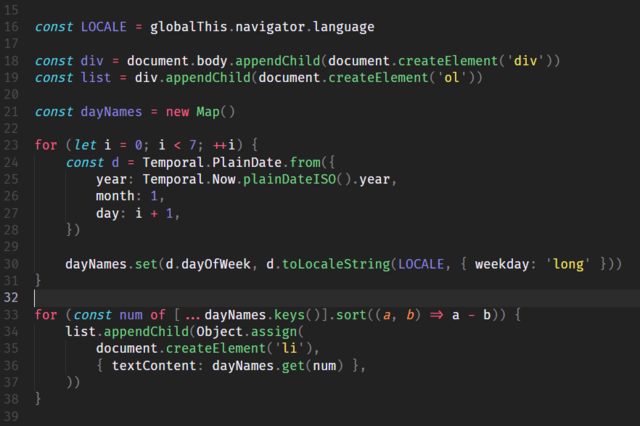

MOŻLIWOŚCI
Javascript to jeden z podstawowych technologii używanych podczas tworzenia stron internetowych. Umożliwia on tworzenie na stronach interaktywnych elementów, a także efektów wizualnych nieosiągalnych samymi kaskadowymi arkuszami stylów oraz walidację danych wprowadzanych przez użytkowników w formularzach. Skrypty te mają znacznie ograniczony dostęp do komputera użytkownika. W języku tym można też pisać pełnoprawne aplikacje przy wykorzystaniu technologii takich jak XUL czy XBL.
